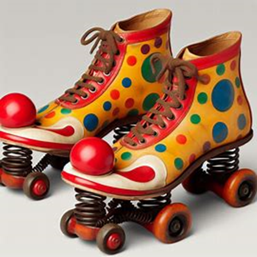
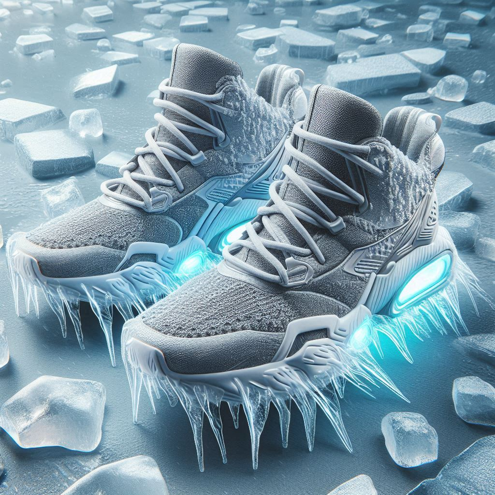
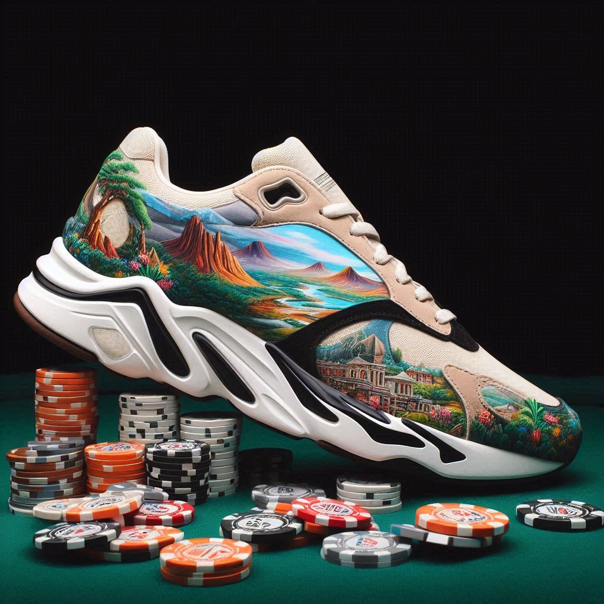
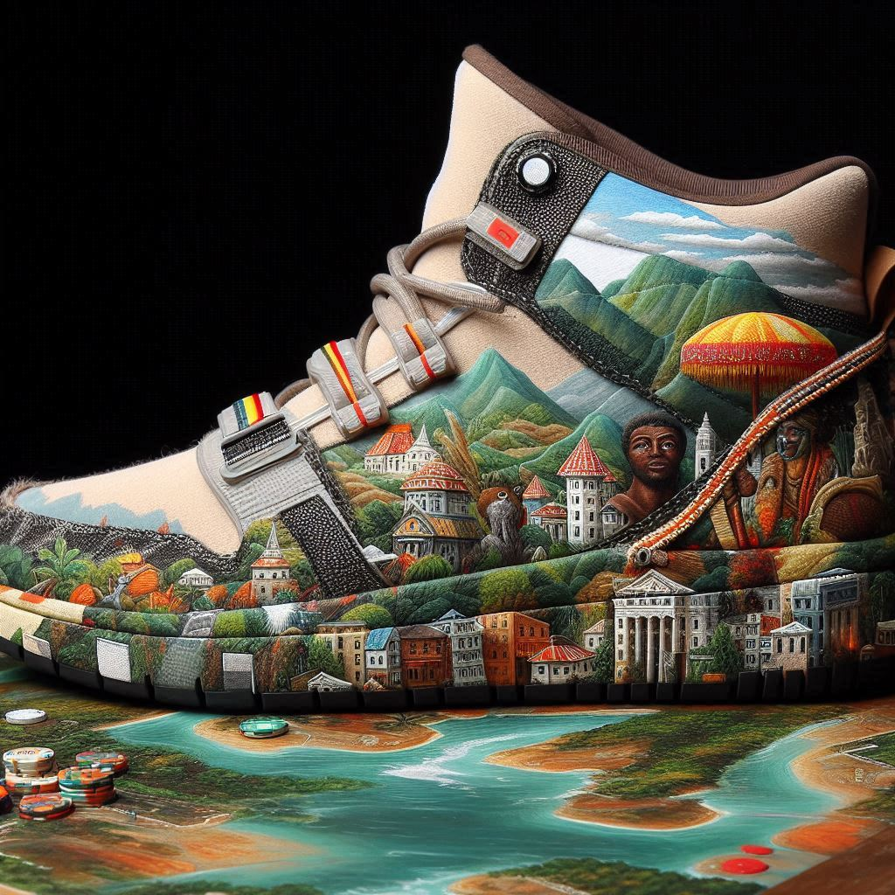

Die Geschichte unseres Unternehmens begann im kalten Winter von 1945 in der Sowjetunion.
Unsere Firma wurde ursprünglich zur Produktion von Fussunterlagen für das
Volk der Sowjetunion geplant.
Wir mussten für den Staat Schuhe designen und
produzieren, dabei entstanden unsere ersten Schuhe wie den „Туфли для
дураков 3000“:
In den Jahren danach produzierten wir dieses Schuhmodell
erfolgreich und das Unternehmen gewann durch staatliche Gelder schnell an
Grösse.
Als dann 1955 der Vietnamkrieg ausbrach und die Sowjetunion Vietnam
mit Waffen unterstützte, wurden auch unsere Produktionseinlagen genutzt und
wir mussten auch für diesen Krieg Waffen entwickeln, testen und produzieren.
Daraus entstand der „клоунский реактивный самолет“, welcher aber nur
testweise eingesetzt wurde.
Mit dem Fall der Sowjetunion geriet unser Unternehmen in grosse
finanzielle Schwierigkeiten und wir mussten viele Mitarbeiter entlassen und
viel umstrukturieren. Als wir dann glücklicherweise im Jahre 2017 vom
Unternehmen Stake gerettet wurden, konnten wir unser Unternehmen nach
Grönland umsiedeln.
In Grönland angekommen, realisierten wir, dass wir unseren Marktanteil
vergössern müssen, um unsere Sparschweine so voll wie möglich zu machen.
Deshalb entschlossen wir uns SneakerZone erstmalig an die internationale
Börse zu bringen und somit unser vertrautes Heim, die Sowjetunion, zu verlassen
Ausserdem entschlossen wir uns ein "Re-Branding" zu machen. Wir richtet uns am westlichem
Markt und nennten unsere Produkte von Туфли дляураков 3000 auf Goofschuh 3000 um.
Von unserer eisigen Umgebung inspiriert, kündigten wir unsere erste orginelle, selbständige,
innovative und markrevolutionäre Schuhkollektion, die Arctic-Fent-Serie an. Diese eroberte den Markt im Sturm. Besonders
der andrang auf unseren vom Tropf nur so überzogenen Arctic-Fent-High-ahhh tripple Airsign freeze 69 war enorm.
Diese, nun für SneakerZone ikonischen, Treter verhalfen uns auf den globalen Sneaker-Thron und zu
enormem Mut.
Nach einer kurzen verschnaufpause auf der Trauminsel Edinbourgh of the Seven Seas kündigten wir unsere nächste einzigartige Kollektion
inspiriert von den Landschaften des Kongos und in zusammenarbeit mit dem Grandcasino-Baden an. Diese zusammenarbeit brachte uns in den
Europähischen markt. Besonders die stark limitierten SneakZone CasinoSneak Low ultra glide Gamble 1 juicy beige nahm die
Römerstrasse in Baden blitzschnell ein und prägte dort eine entscheidende Ära.
Sein Pendant, der SneakZone CasinoSneak ultra High sweet Kongo-air mocha stellte unseren Shop für ganze 2 Stunden lahm, da er in der
internationalen Sneakerszene und besonders in Küttigen als der beste Sneaker des Jahres und so mit als ein absolutes Must-Have gekennzeichnet wurde.
Nun, angekommen an unsere absoluten Spitze sind wir bereit. Wir suchen jeden Tag eine neue Herausforderung um uns zu evolutionieren, das Sneakergame auf den Kopf zu
stellen und die Sneakerszene zum beben zu bringen.



